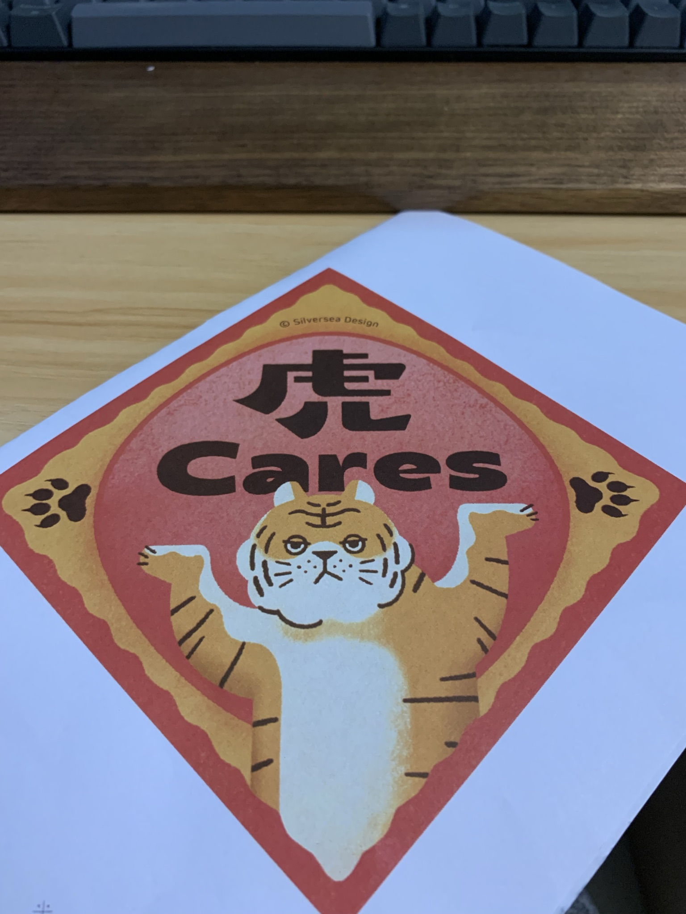
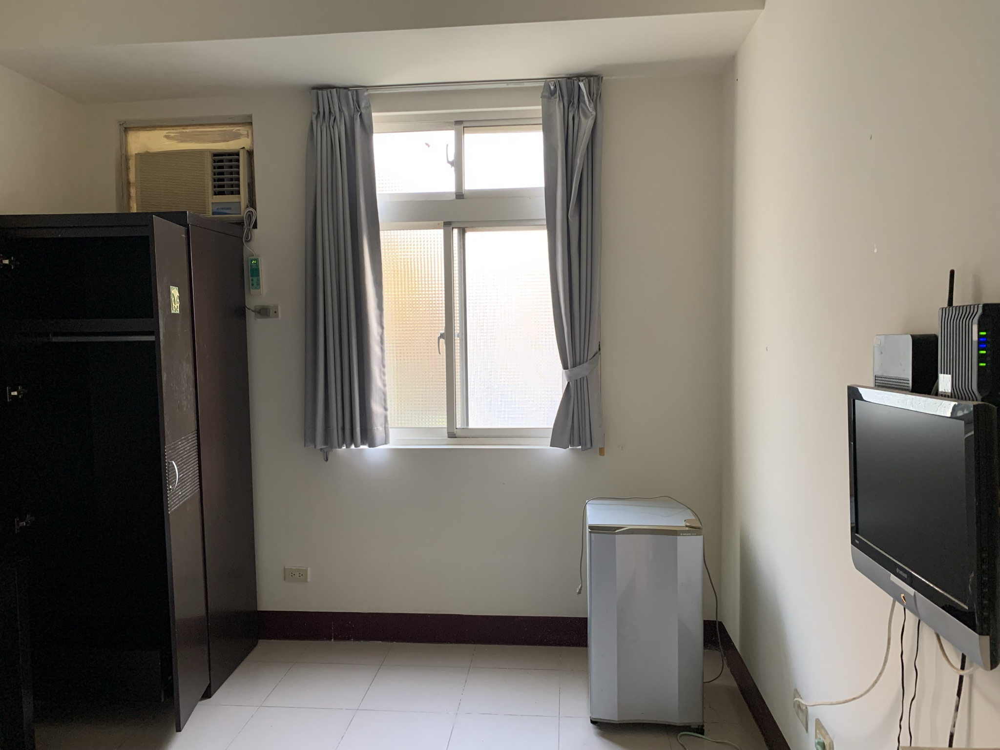
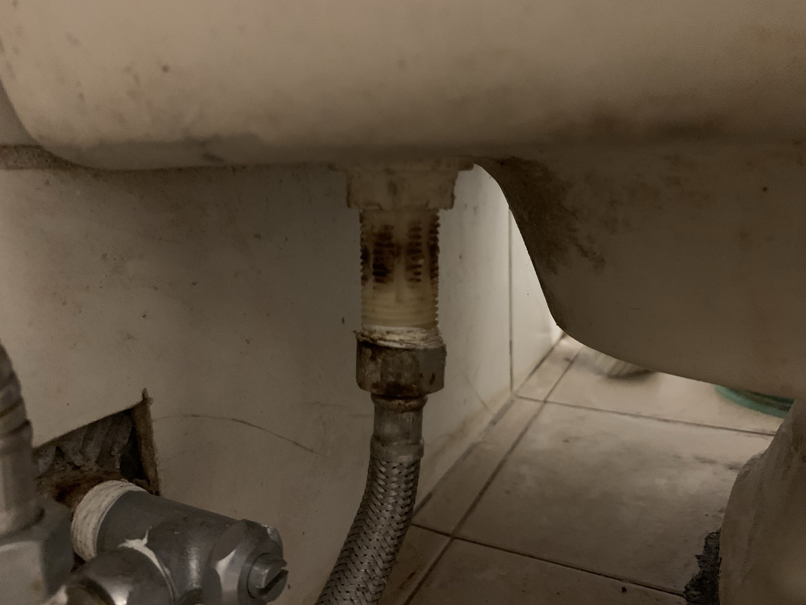
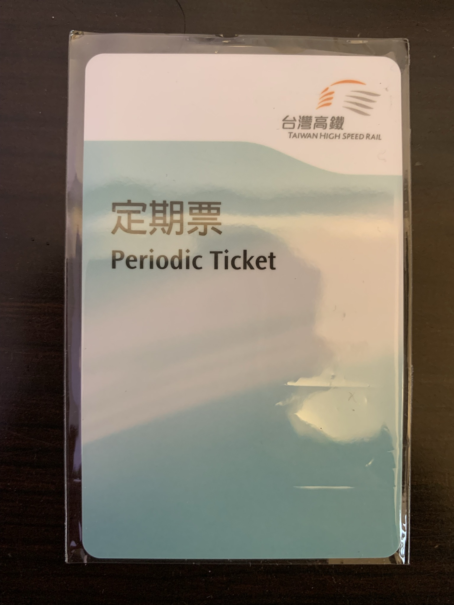
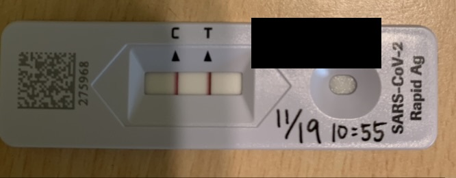
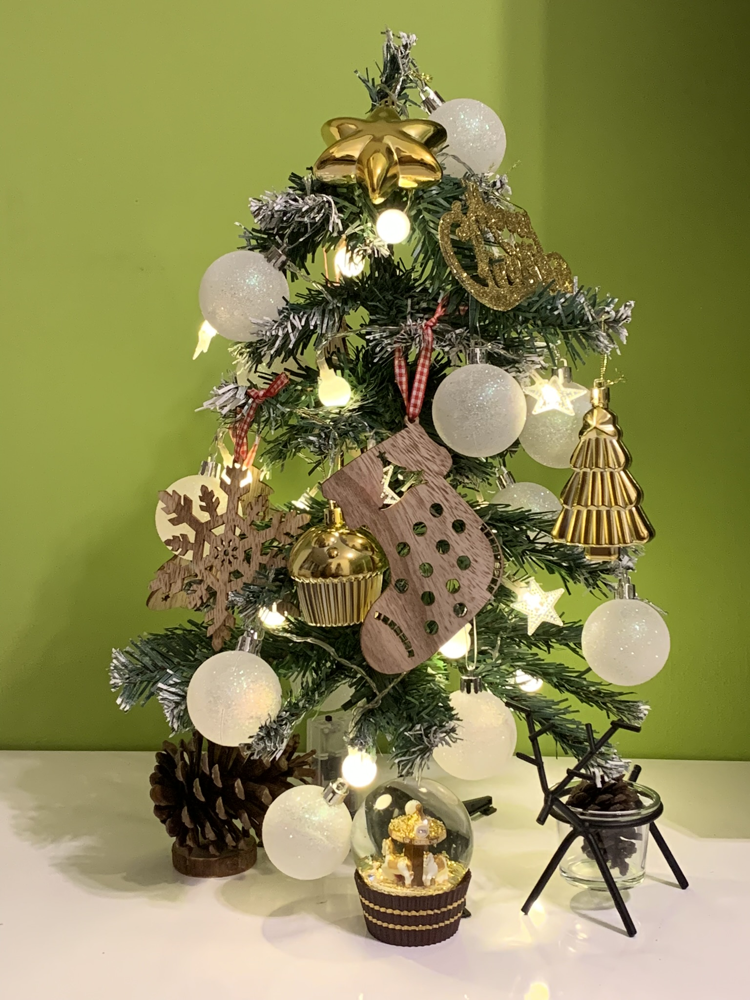

2022的年度主軸(main branch)是減少鑽牛角尖的頻率, 確認關鍵要素, 不要高大上
- 不要想太多到鑽牛角尖的程度
- 不要想太少以至於像隻無頭蒼蠅

生活上的變動
從住了5年的租屋處搬離，離開前還有點捨不得，謝謝。

同居生活後的確出現了更多磨擦和價值觀上有所衝突的部分，最大一次的吵架是5月的ikea鯊魚事件，溝通後找出各自可以接受的部分，一起裝上了浴廁梳妝鏡，更換馬桶水箱零件時一直弄不好漏水，自己心態先崩潰，卻沒思考墊片安裝的合理性，這就是陷入了Why it works, I don’t know的困境，了解工作原理是一件非常重要的事。

使用高鐵當作通勤工具，原本就想說試試看可行性，的確可行但是也很疲憊，單趟通勤時間1.5小時，來回3小時，遇到連續一個禮拜的雨天也有點崩潰。

轉換工作，通勤時間大幅減少，新的環境和同事也正在適應中。
確診了，在多了一些時間的情境之下，也引發了不能逃避必須面對真實自我的狀況。
試著踏出以往自己不會想做的事，提出聖誕節布置。


感謝
感謝自己在諸多變動之下，伴著焦慮和不安，提醒自己按部就班完成一件件事項。
感謝女友願意在衝突當中溝通和達成共識。
感謝前同事和朋友CPC，在工作和求職轉換上給了許多幫助。
體會
自己的精力有限，把握事情的優先順序，留點緩衝空間，分配比例
閱讀
- 駭客思維
- 老派少女的購物路線
- 靈媒偵探城塚翡翠
- 人生四千個禮拜
- 33歲上班族，不去公司，去廟裡修行100天
- 塗鴉日記
- 病從所願：我知道病是怎麼來的
- 無職轉生～到了異世界就拿出真本事 1
個人最喜歡的前三名是: 老派少女的購物路線, 靈媒偵探城塚翡翠, 33歲上班族，不去公司，去廟裡修行100天
影視/動畫
- 異世界歸來的舅舅
- 非常律師禹英禑
- 紀錄片 The Redeem Team
- 星漢燦爛·月升滄海
- 電馭叛客
- 86不存在的戰區
- 小太郎一個人生活
- 鬼滅之刃 遊郭篇
- 間諜家家酒
課程
- 化輸入為輸出
- 軟體需求溝通
旅行
- 台中
- 基隆
其他
- 獅子王歌舞劇
- 閩南語初級檢定